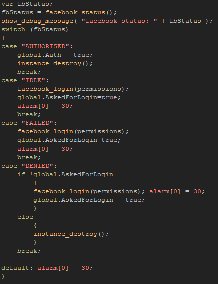
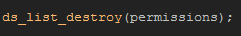

Tutorial
Page 3 of 8
Status
When doing anything across the internet there is always the risk that the connection fails or the recieving server is down or any number of other complications, and if you are using the HTML5 module there is the
added complication that Facebook may already be active and the user logged in. This means that being able to check the status of the Facebook connection is incredibly important as is being able to react according
to the returned value. For this we will use the function facebook_status.
This function returns a string depending on the status of the current Facebook connection and in this tutorial we are going to check for the following strings:
- AUTHORISED
- IDLE
- FAILED
- DENIED
There are other strings that can be checked to determine other details of the Facebook status, but in general these four are the most important. So, we are going to
check and see if the game has been authorised by Facebook (ie: the log in has been successful), or if there has been an issue which has caused the authorisation to fail,
or whether the request has been denied by the user themselves, or, finally, whether the user is already logged in.
The following code will do all of the above, and, since it is in an alarm, it will loop once every second until one of these four status messages is recieved. It should be placed
in the alarm[0] event of our "obj_Facebook_Init" object.

The above code will check the string returned by the status function, and then do one of five things :
- Repeat the alarm. This is the default setting and is there because there may be a delay in the authorisation process due to a poor connection or some other reason
and so we want to keep testing just in case.
- Authorisation. If the recieved string is "AUTHORISED" then it means we can set the global check variable to true for the game and all the in-game Facebook functions will be available.
We can also destroy the instance as it is no longer necessary.
- Idle. Facebook has been initialised but the user has not yet logged in, so we send of the login request with the permissions, set the "Asked" variable to true and the alarm will loop again until
a reply is received.
- Failure. This can happen for many reasons, but it means that the user should try to log in again, so we send another log in request and reset the alarm.
- Denied. When the string "DENIED" is returned it means that either Facebook or the user have not given authorisation to the game for communication with Facebook. In this
case, the global variable for asking should be checked, as it may be that the return value has been tiggered by an outside source (on HTML5) and so we should still ask the user for login permissions and
run this alarm again. However, if the asked variable is true (meaning the user has already been requested to log in), it is useless to keep trying and so the instance is destroyed, leaving the global check
variable set to false.
With that done, we are now almost ready to start posting information to Facebook, but don't forget to add a destroy event into the object to remove the ds_list that
we created to store the permissions that we wanted to send to Facebook on login! The code is simply:

Click on the Next button to go to the next page of the tutorial.